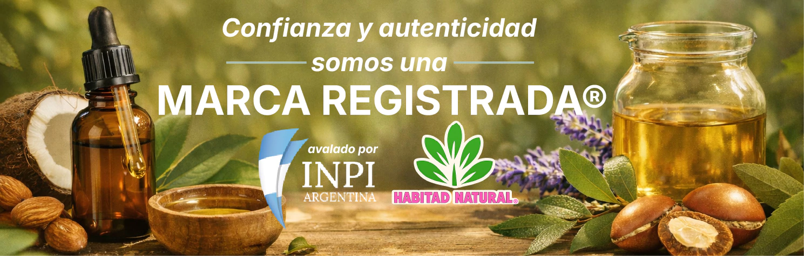

Prototipo local · no es la tienda · productos, precios y paleta reales ·
8 fotos reales de habitadnatural.com (no todas corresponden al nombre de su tarjeta)
¿Comprás para vos o para revender?
Si revendés tenés precios diferenciados en todo el catálogo.
¿Qué necesitás cuidar?
Contanos qué necesitás y te mostramos los productos que te sirven.
Tocá una necesidad y la grilla se filtra al instante.
Sumando alguno de estos llegás al beneficio.
Ofertas packs y combos Habitad
Combinaciones armadas, a menor precio que comprándolas por separado.
Por qué comprarnos
🌱Fabricación propiaElaboramos lo que vendemos
📦Stock permanenteReposición constante
🧾Amplio catálogo367 productos publicados
💬Atención personalizadaTe asesoramos por WhatsApp
🚚Envíos a todo el paísGratis superando $60.000
🤝Minorista y mayoristaPrecios según tu perfil
Lo que dicen quienes ya compraron

Preguntas frecuentes
Lo que más nos consultan antes de comprar.
Habitad Natural
Productos naturales elaborados con dedicación, atención personalizada y un catálogo
pensado para acompañar distintas rutinas de cuidado.
Santiago PérezFundador y CEO
Nuestra historia
Una historia que nació del deseo de cuidar naturalmente
Habitad Natural nació de una convicción sencilla pero profunda: la naturaleza
puede acompañarnos en la construcción de hábitos de bienestar más conscientes.
Lo que comenzó como un interés personal por las plantas medicinales y los
conocimientos tradicionales fue creciendo con estudio, dedicación y experiencia.
Con el tiempo, esa búsqueda se transformó en un proyecto familiar y, más
adelante, en una marca argentina dedicada a acercar productos naturales a
personas, comercios y profesionales de todo el país.
El camino de Santiago
Su camino comenzó a partir de una inquietud personal: comprender mejor el vínculo
entre las plantas, los hábitos diarios y el bienestar integral. Esa curiosidad lo
llevó a formarse en naturopatía, plantas medicinales y jugos naturales, además de
incursionar en el estudio de la homeopatía.
Su formación no busca reemplazar la mirada médica ni presentarse como profesional
de la medicina. Su propósito es recuperar conocimientos tradicionales, estudiarlos
responsablemente y convertirlos en propuestas naturales que puedan acompañar el
cuidado cotidiano de las personas.
A medida que fue profundizando ese recorrido, Santiago comprendió que no alcanzaba
con ofrecer un producto. Era necesario crear una marca cercana, capaz de escuchar,
orientar con responsabilidad y mantener una relación humana con cada persona que se
acercara buscando una opción natural. Así nació Habitad Natural.
Primero fueron las consultas, las primeras elaboraciones y las recomendaciones
entre personas. Después llegaron nuevos productos, clientes de diferentes lugares
del país, comercios interesados en sumar la línea y miles de experiencias
compartidas.
De un propósito personal a una comunidad nacional
Nuestro crecimiento no se mide solamente por la cantidad de productos o pedidos
enviados. También se refleja en las personas que vuelven a elegirnos, en los
comercios que incorporan nuestra línea y en las experiencias que nuestra comunidad
comparte después de conocernos.
Lo que nos diferencia
Atención personalizadaEscuchamos cada consulta y damos información
clara para elegir el producto más adecuado según el uso buscado.
Elaboración diariaTrabajamos continuamente para ofrecer productos
frescos y mantener el stock disponible.
Selección conscienteElegimos con cuidado las materias primas y
valoramos los ingredientes naturales y de origen orgánico.
TrazabilidadCuidamos cada etapa, desde la selección de los
ingredientes hasta la preparación y el despacho del pedido.
Una relación cercanaNo queremos ser una marca distante: nos
interesa acompañar y seguir mejorando a partir de cada experiencia.
Alcance nacionalRealizamos envíos a todo el país para que más
personas y comercios accedan a nuestra propuesta.
También acompañamos a otros negocios
Habitad Natural cuenta con propuestas especiales para comercios, dietéticas,
herboristerías, almacenes naturales, distribuidores y personas que desean incorporar
una línea natural a su actividad: atención personalizada, stock permanente, catálogo
digitalizado, productos de fabricación diaria y acompañamiento comercial.
Nuestra manera de entender el bienestar
Para nosotros, cuidarse naturalmente no significa rechazar la medicina ni reemplazar
tratamientos profesionales. Significa prestar atención a los hábitos, conocer mejor
nuestro cuerpo y recuperar una relación más consciente con los recursos que ofrece
la naturaleza.
Detrás de cada pedido hay personas reales preparando productos para otras personas
reales. Ese vínculo humano es uno de nuestros mayores valores.
Habitad NaturalSiempre pensando en tu bienestar.
¿Ya sabés qué necesitás cuidar?
Volvé arriba y elegí tu necesidad: el catálogo se filtra solo y agregás
sin salir de esta página.
Salen menos que comprar los productos por separado.
Reseñas de clientes
Preguntas frecuentes
0
$0Seguí sumando
Tu compra
Subtotal$0
Envío
En la tienda real este botón carga los productos con la API del propio theme
y te lleva a /carrito. De ahí en adelante todo es Tiendanube:
envío, medios de pago y checkout, sin que toquemos nada.